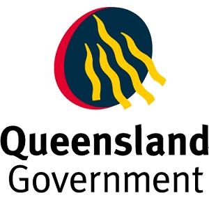

Vincent State School
280 Palmerston Street, Townsville, 4814
Our distinctive curriculum offerings at Vincent SS include: Our outcomes based curriculum (5KLAs of Science SOSE Technologu The Arts and HPE) has been organised into the 4 New Basic organisets and staff have developed units and English are tayght as integrated subjects across all key learning areas. Our Literacy and Genre program consists of an oral program for P-2 classes, a whole school spelling program Letter land for YrP-3 classes and Spelling - A comprehensive Program Teaching Children How to Spell for Yr4-7 classes and an individual spelling program/forder for Yr4-7 classes and a structured and sepuential reading skills program where by our Yr4-7 students participate in extra curricular activities that are of interest and high engagement teaching them social and life skills. The program runs for 6 weeks each term and some activities our students have been incolved in so far have been tae kwon do, table tennis mini golf, chess, painting, jewelry making, craft, construction.